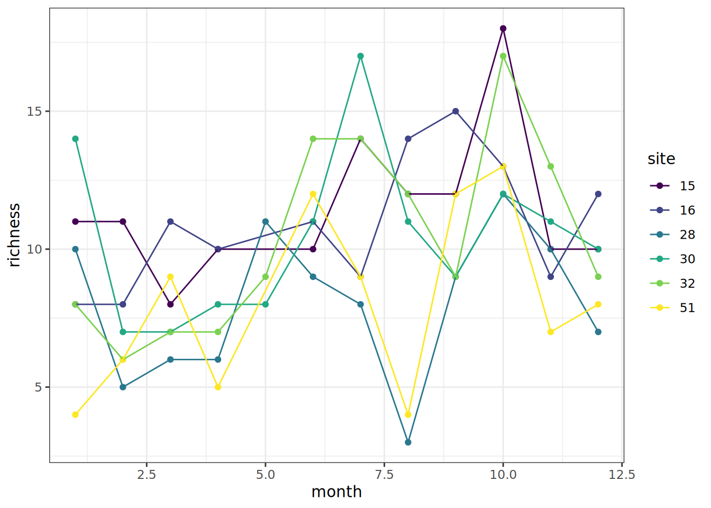

library(tidyverse)
## ── Attaching core tidyverse packages ──────────────────────── tidyverse 2.0.0 ──
## ✔ dplyr 1.2.1 ✔ readr 2.2.0
## ✔ forcats 1.0.1 ✔ stringr 1.6.0
## ✔ ggplot2 4.0.3 ✔ tibble 3.3.1
## ✔ lubridate 1.9.5 ✔ tidyr 1.3.2
## ✔ purrr 1.2.2
## ── Conflicts ────────────────────────────────────────── tidyverse_conflicts() ──
## ✖ dplyr::filter() masks stats::filter()
## ✖ dplyr::lag() masks stats::lag()
## ℹ Use the conflicted package (<http://conflicted.r-lib.org/>) to force all conflicts to become errors
library(viridis)
## Loading required package: viridisLite
df = read_csv('data/Calcasieu.csv') |>
mutate(site = as.character(site),
month = month(date)) |>
pivot_longer(cols = 4:62,
names_to = "Species",
values_to = "Count") |>
filter(Count > 0) |>
group_by(month,site) |>
summarize(richness = n_distinct(Species))
## Rows: 90 Columns: 62
## ── Column specification ────────────────────────────────────────────────────────
## Delimiter: ","
## chr (1): basin
## dbl (60): site, Speckled Madtom, Sailfin Molly, Blue Crab, Atlantic Croaker...
## date (1): date
##
## ℹ Use `spec()` to retrieve the full column specification for this data.
## ℹ Specify the column types or set `show_col_types = FALSE` to quiet this message.
## `summarise()` has regrouped the output.
ggplot(df, aes(month, richness, color = site))+
geom_point(size = 1.5)+
geom_line()+
scale_color_viridis_d()+
theme_bw()